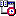

Start

Welcome to the Start Menu.
Please enjoy your stay.
At the Start Menu, you can do all kinds of thing.
Start a revolution.
Start a program.
Start living more proactively.
Start a website.
Start a game.
A task you ask
What is life?
Go Back
A task you ask
Windows can't help you with that.
But
you can do it.
Go for it!
Go Back
Start a program
What kind of program?
Start a television program.
Start a radio program.
Start a theater or musical program.
Start a program for people.
Start a computer program.
Go Back